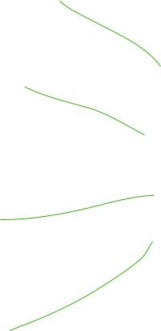
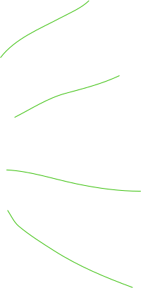

Польза шерстяной одежды глазами дерматолога
Мы поговорили о свойствах шерстяной одежды с Синявиным Дмитрием Юрьевичем, доктором медицинских наук. Он разобрал по косточкам последние исследования в этой области.
Синявин Дмитрий Юрьевич
Врач-дерматолог
Развенчание мифа
об аллергии
на шерсть
об аллергии
на шерсть
Тонкая шерсть не зудит
Будет зудеть кожа после шерсти или нет зависит от толщины волокна. Чем меньше диаметр волокна шерсти, тем мягче ткань и тем меньше она чешется. Тоньше — значит мягче. Диаметр измеряется в микронах (мкм) — одной миллионной метра. Покалывания и зуд ощущается после шерсти с крупными микронами → ≥ 30 мкм.
Получается,
с тонкой шерстью ничего не чешется
средняя толщина шерсти иногда вызывает дискомфорт
толстая шерсть часто зудит

13 мкм
15 мкм
16 мкм
19 мкм
24.5 мкм
30 мкм
40 мкм
17.5 мкм
идеальный размер для болеющих
любими кожными заболеваниями
любими кожными заболеваниями
Чем толще шерсть, тем выше риск зуда, царапин, жжения
30 мкм
риск возникновения зуда
резко увеличится
резко увеличится
Даже майки
из шерсти
не колятся
из шерсти
не колятся


Это 100% сверхтонкая мериносовая шерсть 19,5 микрон